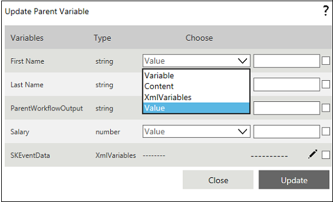
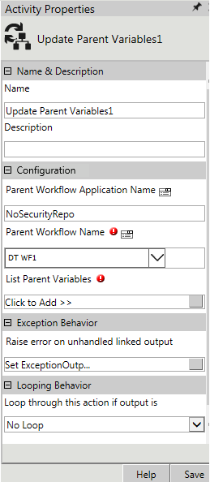
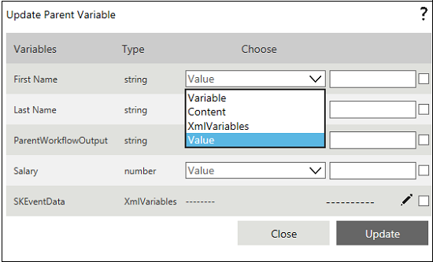
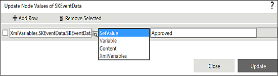

Note: The value can also be hardcoded using the Value option as shown in the following image.

No
Activity description:
In AVEVA Work Tasks, a parent workflow variable can be updated from a child workflow provided both child and parent workflow belong to the same repository. This can be achieved by using Update Parent variables activity.
Activity Properties:
The Update Parent Variables activity has to be configured by specifying appropriate values for the different properties in the Activity Properties area. The Activity Properties can be accessed by clicking on the Activity Properties tool in the Tool Bar or by selecting the appropriate option from the right-click menu for the Update Parent Variables activity. The Activity Properties are organized under the following groups of related properties. The properties under each group are described in this topic.

Name & Description
Use these properties to specify the name and description for the activity.
Name - This property can be used to specify a name for the activity.
Property Type: Optional (This property needs to be set only if necessary.)
Description - This property specifies a brief description to be displayed for the activity.
Property Type: Optional (This property needs to be set only if necessary.)
Configuration
Use these properties to configure the functionality of the activity.
Parent Workflow Application Name - This property specifies the name of the application to which the parent workflow belongs. You can specify the application name directly here or click on the icon to open the Expression Builder and build an expression for the application name.
The parent workflow should belong to the same repository of the child workflow. This property of a child workflow is exposed for backward compatibility.
Property Type: Mandatory (This property must be set if the activity is to be executed.)
Parent Workflow Name - This property specifies the name of the parent workflow. You can specify the workflow name directly here or click on the icon to open the Expression Builder and build an expression for the workflow name.
The parent workflow should belong to the same repository of the child workflow.
Property Type: Mandatory (This property must be set if the activity is to be executed.)
List Parent Variables - This property specifies the parent workflow variables to be updated. Click on the edit icon to open the
'List Parent Variables' property window.
Property Type: Mandatory (This property must be set if the activity is to be executed.)
Set the List Parent Variables property
To update the value of variable:
Note: The value can also be hardcoded using the Value option as shown in the following image.

To set the value of XML Variable:
Note: The value can also be hardcoded using the SetValue option as shown in the following figure.

See Update Parent Variables - List Parent Variables for a detailed description of the List Parent Variables property window.
Looping Behavior
The property in the Looping Behavior group has been described below. You can use this property to specify the looping behavior of the activity.
Property Type: Optional (This property needs to be set only if necessary.)
Activity outputs: The Update Parent Variables Activity returns the output value set in the Set Workflow Output property.
Exception Behavior
Each activity has the Raise Error on Unhandled Linked Output property on click of which, it shows all the default configured mapped error outputs in red with their check boxes selected.
See Mapped Error Outputs for more details.